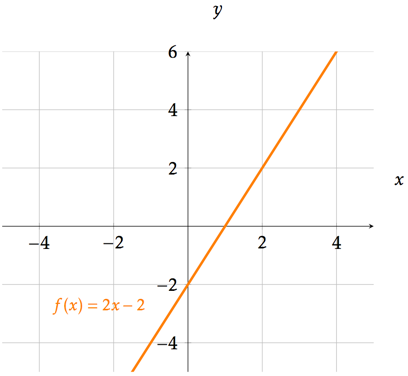
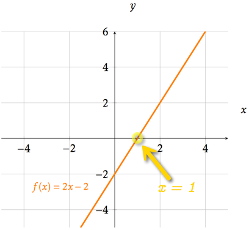
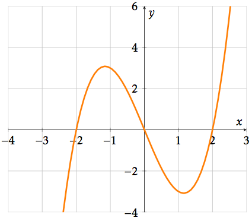
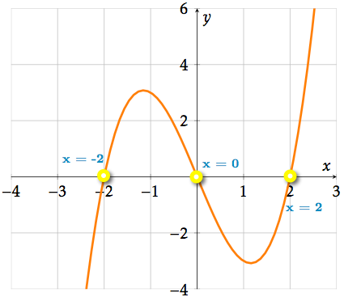

Nullpunkt og likninger
Contents
Nullpunkt og likninger¶
Nå skal du se på hva som menes med nullpunktene til en funksjon og hvordan du skal finne de. Målet er at du skal
vite hva et nullpunkt er
kunne finne nullpunkt grafisk og ved regning
kunne skrive nullpunkt med riktig notasjon
kunne finne skjæringspunkt med digitale verktøy
.jpg)
Hva er et nullpunkt?¶
Vi finner nullpunkt når vi løser likningen \(f(x)=0\). Nullpunktene er x-verdiene som gjør at funksjonsverdien, det vil si utverdien, er lik null.
Oppgave 1
I koordinatsystemet nedenfor er grafen til funksjonen \(f\) tegnet. Hva er nullpunktet til \(f\)?

Løsning
Fant du ut at nullpunktet var \(x=1\) ? På figuren under ser vi skjæringspunktet mellom grafen og x-aksen. Her er funksjonsverdien er lik null: \( f(x)=0 \).
x-verdien som bestemmer skjæringspunktet er \(x=1\). Da har vi at nullpunktet er \(x=1\).

Oppgave 2
Bestem nullpunktene til funksjonen som har følgende graf:

Løsning
Fant du disse nullpunktene? \(x=-2\), \(x=0\) og \(x=2\).

Nullpunkt med GeoGebra¶
I filmen nedenfor viser vi hvordan vi finner nullpunkt med GeoGebra.
Oppgave 3
Funksjonen \(f\) er gitt ved
Finn nullpunktene til \(f\) med GeoGebra.
Klarer du å finne nullpunktene uten bruk av digitale verktøy?
Nullpunkt ved regning og grafisk Løsning¶
Her er en video som forklarer mer om hva nullpunkt er og hvordan du kan finne noen nullpunkt ved regning.
Tidligere skulle du finne nullpunktene til \(f(x)=x^2+x-2\) ved å bruke et digitalt verktøy. Fant du nullpunktene? Vi kan også benytte fullstendige kvadraters metode for å regne ut nullpunkt.
Vi ser at \(x=1\) eller \(x=-2\).
La du merke til at vi faktoriserte da vi fant nullpunktene ovenfor? Ved å benytte fullstendige kvadraters metode fant vi at
Vi fant nullpunktene ut fra hvilke x-verdier som gjorde at det faktoriserte uttrykket ble lik null.
Legg også merke til at:
Det betyr at hvis vi vet nullpunktene kan vi faktorisere andregradsuttrykket. Kaller vi nullpunktene \(x_1\) og \(x_2 \) har vi at
: width: 350
: align: center
Oppgave 4
Bruk både fullstendig kvadraters metode og nullpunktmedtoden til å faktorisere $$2x^2-5x+2).
Oppgave 4 Før du går videre til neste side, bruk både fullstendig kvadraters metode og nullpunktmedtoden til å faktorisere (2x^2-5x+2).